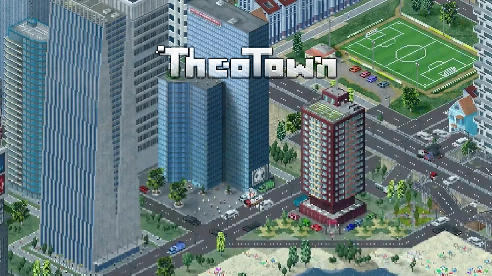
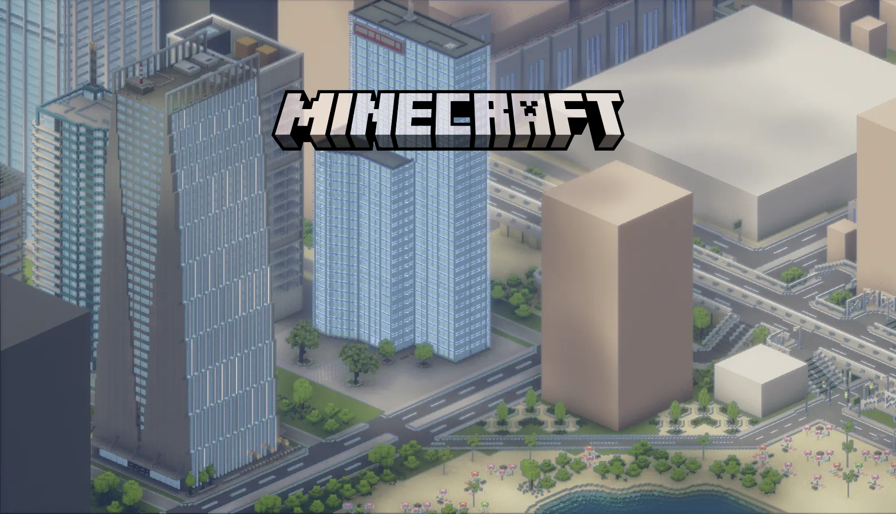

?
—
—
—


YOUR CITY & YOUR WORLD
你曾想象过吗，用 Minecraft 的方式打开你的西奥城市？我们团队的 TheoCraft —— 一个足以颠覆创意的项目，做到了。
每张卡片左边是 TheoTown 存档，右边是生成的MC世界截图，全部由 TheoCraft 生成。
整个转换过程都在 TheoCraft 桌面端完成。
在 TheoTown 中打开你的城市，导出 .city 存档文件。
把存档拖入 TheoCraft，它会自动解析你的城市布局。
选择转换模式，一键导出 Minecraft 可用的存档文件。
把存档放进 Minecraft 存档目录，进入游戏，你的3D城市就在眼前。
摘自各处对 TheoCraft 的评价，总结为【好评如潮】！
—
—
—